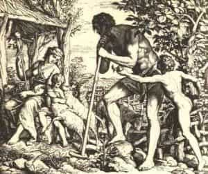
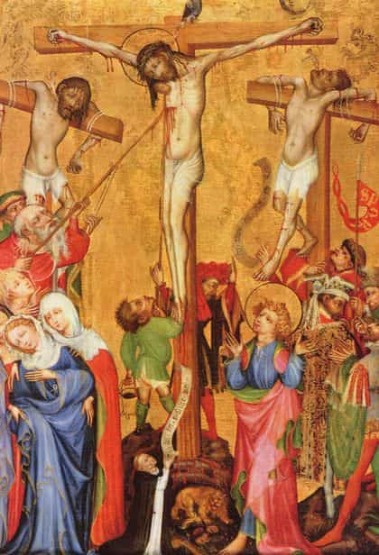

< < < Back
The Sacred Heart And Masculinity – Return Of Kings
Before becoming Catholic, reverence for the Sacred Heart seemed like a devotion for silly women; this was not helped by the many lacy, pretty, effeminate pictures attached to this facet of Christian devotion. Also, having been an Orthodox Christian, the practice seemed odd, to me; many in Orthodox circles spoke of the devotion as being “Crypto-Nestorian,” as though it separated Christ’s Humanity from His Divinity. Finally, it seemed to me that it was yet another example of modern “Churchianity” (i.e., all “love” and no consequences).
But, as I have come to see, the authentic spirituality of this devotion is precisely the inverse of each case. Rather than being an effeminate devotion for silly women, it is focused upon the most masculine qualities of Christ. Rather than being fraught with theological shortcomings, it is rooted in the profoundest doctrines of the Fathers on the Incarnation. Far from being Churchian, the devotion deals extensively with God’s wrath and disappointment.
The Masculine and Feminine Principles
For all of human history, society has been furthered and protected chiefly by the labors and sacrifices of men. We all know the saying: “no pain, no gain;” this is as true when are shredding our muscle tissue so that it can rebuild, or enduring discomfort and even pain to grow in virtue, as it is when men bleed and sweat for their countries and for their kin. Thus, though many have balked at the idea of a “weak” or suffering God, we see that Christ’s Passion puts Him right in the center of the mystery of the human experience, which is trapped between vulnerability and strength, often preserving strength at a great price. Media vita in morte sumus.

More than that, however, the Church always saw that there was an added mystery. We have spoken before of how God is the supreme masculine, of which created masculinity is a shadow, and that the creature is feminine in relation to Him. Christ, in emptying Himself of the exterior glory of the Godhead, in humbling Himself to be shrunk into a span, in putting Himself into the “feminine” sphere of creation and even consenting to be penetrated with the nails and the lance, seems to have inverted, as it were, the “Yin and the Yang” in the order of being. And there is in this a great mystery.
In the splendor of the Divine Nature, God is Impassible and Incorrupt, the Masculine Act, never the feminine potential. First Satan and his apostate angels, then man, insisted nevertheless on exalting themselves against Him, as though they could do Him despite or injury. “Very well,” one could imagine God reckoning; “if you want Me to come down to where you can exalt yourselves over Me, subject Me to your whims, attempt to do Me harm and despite, then fine, I’ll play fair: here I come.”
But, though this condescension in the Incarnation appeared to put God in a position of womanly weakness (analogously speaking), it was His counsel that this should be the manner of displaying His nature to be of such invincible might, that when God our Father broke upon the sharpened daggers of this world, life and strength would flow out from Him so forcefully as to annihilate all weakness. Man drinks this down as mercy or as wrath, depending upon whether he continues to resist the flood of His power, or learns to stoop and drink from the torrent.
Strength and Weakness; O Admirabile Commercium!
One will find many of the ancient philosophers, and also the theologians, speak of continence. The idea is of “containing” one’s self, physically and spiritually, as a matter of manliness and virtue. The body loses fluids for reasons related to weakness; injury can result in loss of blood, and “the life is in the blood;” labor brings sweat; stress and sorrow bring tears; sickness expels many fluids; our nether regions express the waste product of our mortal coil; a man’s mind is overthrown, his limbs grow weak and his body releases sleep hormones upon ejaculating. As a general rule, men stressed the need to avoid the loss of vigor and life through moral and physical incontinence.
Yet here is Christ: emptied of His divine glory, and stripped even of His clothes; He has wept; He sweated, even to the point of bursting His capillaries and sweating blood; He is bleeding from innumerable flesh wounds; He spouts blood, riven through with nails; at last, as the final insult, a lance is thrust into His already dead Body, piercing the Heart and releasing a torrent of blood and water. Well might He have said, “I thirst,” for He has been drilled full of holes and drained like a cask of wine pressed from the grapes of Wrath.

We looked at the mystery of suffering and its relation to strength; sometimes when the man bleeds, sweats, ejaculates, etc., though he grows somewhat weaker, new life or strength is defended or propagated elsewhere. Even Adam, immune at that point to corruption or suffering, was reduced to a weakened state of sleep, for God to take Eve from his side. For mere men, who are finite, there is a limit to this. But the Lord in His shrewdness deceived the Devil with the bait of weakness. The God Who came down to allow His creatures to visit the hurt upon Him in His Humanity, which they could not visit upon His Divinity, has had the last laugh.
For in reducing Him to the lowest pitch of humility, passivity and physical incontinence, with the thrust of the nails and the lance they have unwittingly burst the dike of the Divinity! Now, from the Holy of Holies in the Temple that is God’s Body, the Sacred Heart of the Lord, flows a torrent of blood, water and fire, which deifies us, the deicides! Such is God’s virility, such His power, such His potency, that when His creatures could finally do Him the hurt they wished, it caused healing, strength and power to flood out to every corner of the cosmos. The weakness of God is itself strength beyond the mind’s imagining.
Saint John Chrysostom and the other Fathers, speak of how the Church was born from the side of the Lord, from the water and blood flowing from His Heart, just as Eve was born from the rib of Adam’s side. The rending of the Lord’s Heart, therefore, is the husband’s betrothal of his wife; it is the father’s begetting of his children; it is the winning of the rights of conquest; it is the labor of the husbandman producing good fruit in season; it is the reminder of the subordination of woman to man, wrought by God with a belly laugh and a glint in His eye; it is the humour, the cunning, the meekness, the wrath and, yes, the ardent love, of the Supreme Patriarch.
One could say it is the passing of a certain kind of test, to which women often try to subject their men… but I will stop just shy of saying so.
The Patriarch’s Ultimatum: Take it or Leave it
While devotion to the Lord’s Most Sacred Heart is as ancient as the Church itself, it gained a new clarity of form and content as the modern age was born, and is one of three spiritual treasures given to man to warn him of the increasing urgency of making his peace with the Maker. The devotion to the Sacred Heart acquired a special momentum from the Medieval devotion to the Five Wounds. This devotion focused on the lengths to which the Patriarch has gone to recall His errant wife and children back to Him, as witnessed to in His Five, Chief Wounds: the hands, feet and side. The wound in the side gained a special significance, as it opened access to His Heart, Origin of the Church and of the Sacraments, Fount of Forgiveness, Holy of Holies where Christ communed, in His Humanity, with the Father, and locus of all His intentions, vengeance and mercy alike.
Hence a common image of that age, is the Ostensio Vulnerum, showing Christ returning on Doomsday and showing His Five Wounds to all mankind. The repentant see in Them the pledge of their salvation; the impenitent see in them the evidence of their crimes. A vision oft-repeated in devotional literature at that time, was an apparition of Christ to an impenitent man on his deathbed, entreating him to repent by showing His wounds and saying: “look, these I have suffered to save you; accept them.” When the man still refused, Christ reached into the Wound of His side, into His heart, and drew from there an handful of blood, which He then splattered all over the man’s face, saying: “Thou demon-spawn, this shall be a ready token betwixt Me and thee in the day of doom, that I would have done thee mercy, and thou wouldst not!” Iesu, misericordia!
In the Heart of Christ we see, indeed, the depth, the ardor, the perfection, the super-abundance, of God’s love for man. We see the assertion of His rights as much as of His providence towards us. If, after condescending to indulge us in our lust to subject the Deity to our whimsy, we still will not bend the knee to the infinite grace and might which flowed from His rent Heart, then truly He has done all for us that could be done, “and we would not.” All that remains is the expectation of severe judgment. All the saints who refined devotion to the Heart, spoke of Its sorrow and wrath in the face of man’s indifference.
In our days, we see how hysterical and haughty many females have become, kicking against the goads of nature and resenting man his superior role. Men could point to rows of military graves, the lives spent in back-breaking labor, the glories of art, architecture, literature and science with which we have showered them. The day is at hand when, if we live, women will have to be dealt with severely. But we must remember that, as women are to men, so we men are to our rightful superiors, chiefly God. Let us not recompense Him by acting like odoriferous, lunatic, blue-haired dykes, ourselves.
I have spoken here of but one, central aspect of the devotion to the Heart of the Lord, which I think is most suited to ROK. I encourage you to learn more about it; I have put some things on my blog about it, and will probably write some more. Those who increase their devotion to the Sacred Heart, especially in this month of June, can gain many graces from God our Savior. To Him be glory now and forever, amen.
Read More: Why Is Modern Christianity So Wimpy?